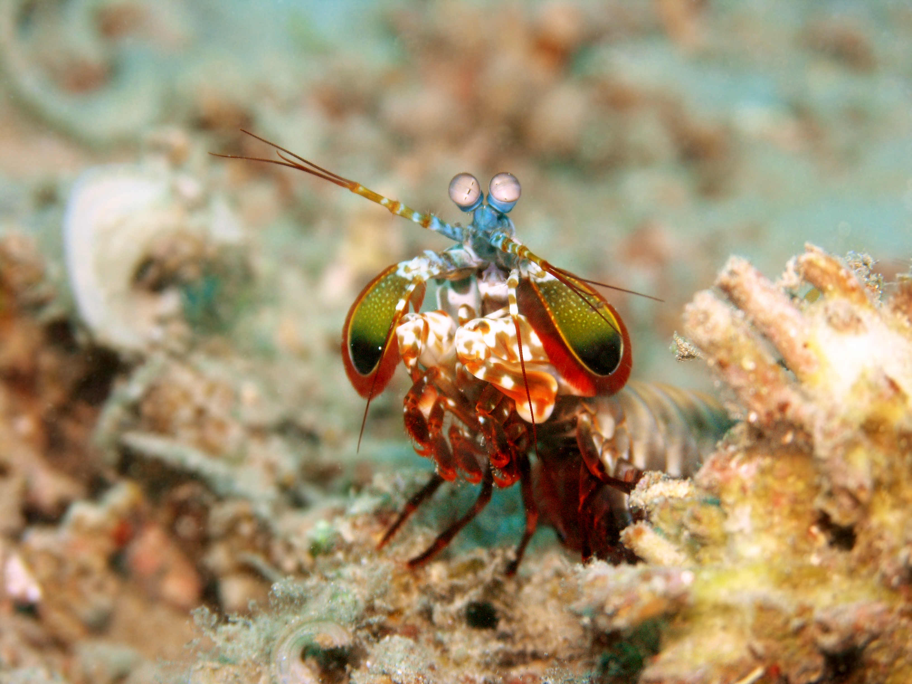

Geralzão
Aqui deveria existir um artigo sobre o tal Stomatopoda (Odontodactylus scyllarus), o impressionante (animal, artrópode, crustáceo, malacostraco hoplocarido stomadopodo) camarão louva-a-deus da violência ardilosa das profundezas marinhas. Infelizmente meus esforços no momento estão em melhor organizar e exibir os elementos de uma página html, portanto conforme for adquirindo conhecimento e prática no assunto, minha pretensão será voltar aos exercícios que envolvem layout e criar uma disposição visualmente atrativa. Caso você estivesse interessado em saber mais sobre o tal Stomatopoda, sinto muito, não vou descorrer muito mais sobre o animalzinho aqui. Mas deixo aqui um link para que você obtenha a referência necessária.
